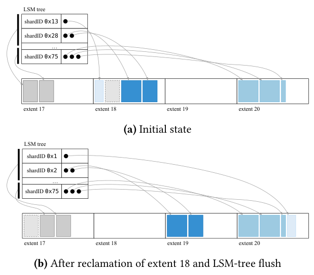
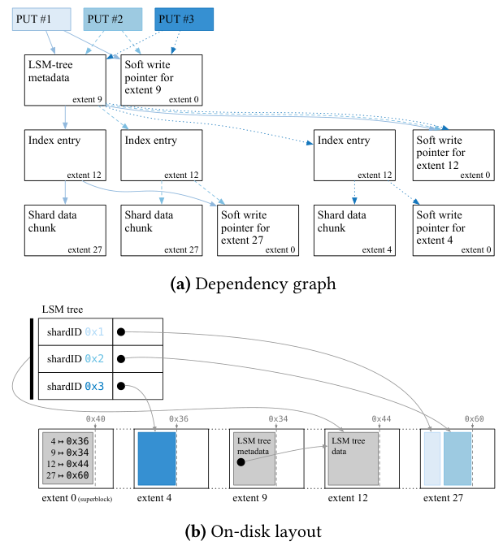
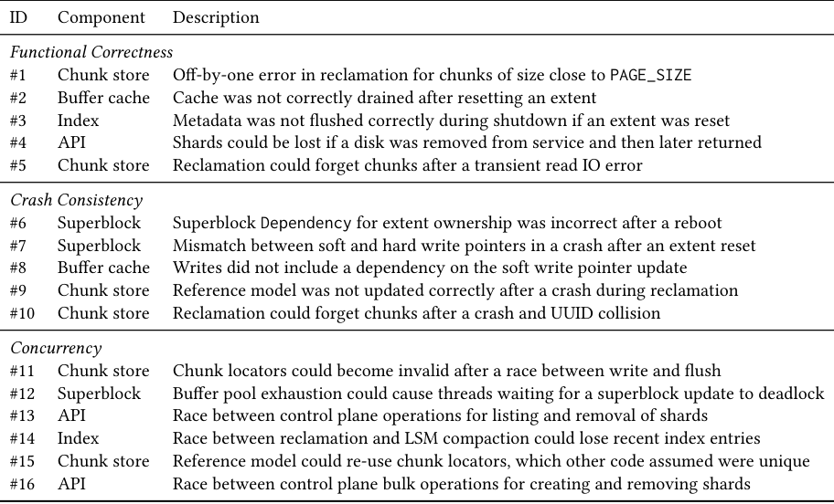
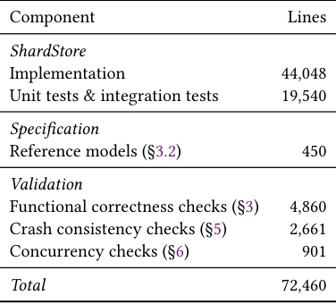

Using Lightweight Formal Methods to Validate a Key-Value Storage Node in Amazon S3
This page was written by an AI model to give a high-level overview of the paper. Please check the paper for detail: ACM Digital Library.
ShardStore is a new key-value storage node that Amazon S3 is gradually rolling out to replace part of its existing storage fleet. Each node persists shards of customer object data on hard disks behind an LSM tree, using append-only extents, extensive concurrency between client requests and background maintenance, and a soft-updates-style crash consistency protocol instead of a write-ahead log. The implementation is over 40,000 lines of Rust, changes continuously under a full-time engineering team, and already holds hundreds of petabytes of customer data during its rollout. Even though S3 replicates shards across nodes for durability, a single node's crash-consistency or concurrency bug is expensive: it triggers large-scale repair traffic and can leave the node in a state that needs manual operator intervention.
Full formal verification of a system like this exists (FSCQ, Yggdrasil, VeriBetrKV) but the authors judge it impractical here: VeriBetrKV, for example, reports needing about seven lines of proof per line of implementation, and verified artifacts are typically written and maintained by formal-methods experts rather than the feature team. Ordinary integration and load testing, on the other hand, rarely reaches the specific crash points and thread interleavings that expose crash-consistency and concurrency bugs, since those require reasoning about arbitrary orderings of disk writebacks and narrow race windows between background tasks like compaction and garbage collection.
The paper's approach is "lightweight formal methods": write a small executable reference model for each component in the same language as the implementation (Rust); decompose correctness into independent properties and check each with whichever automated tool fits best, rather than one proof of the whole system; and hand the models and test harnesses to the engineering team so the validation stays current as the system evolves, instead of depending on continued involvement from formal-methods specialists.
Concretely, a reference model is a drastically simplified stand-in for a component , ShardStore's persistent LSM-tree index, for instance, is modeled as a plain in-memory hash map. Property-based testing generates random sequences of API and maintenance operations, runs them against both the model and the real implementation, and checks the two stay equivalent; the same technique, extended with injected crashes, checks crash consistency against a formalized notion of exactly which recent writes a crash is allowed to lose; and stateless model checking (via the Loom and Shuttle checkers for Rust) explores concurrent interleavings of the implementation against the models to check linearizability. Reference models also double as mocks in ordinary unit tests, which keeps engineers in the habit of updating them whenever they change the real code.
Across roughly nine person-months of initial formal-methods effort (two experts full time, a third for three months), the approach has prevented 16 issues from reaching production, spanning functional correctness, crash consistency, and concurrency, at a combined specification-and-test-harness cost of about 13% of the full ShardStore code base. Since the initial build-out, 18% of that validation code has been written by engineers with no prior formal-methods background, extending it to cover new features.

Key takeaways
- ShardStore spreads shard data across append-only extents, indexed by an LSM tree, and orders writebacks with a soft-updates-style protocol built from explicit, runtime-constructed
Dependencyobjects instead of a write-ahead log. - "Lightweight formal methods" here means: small Rust reference models per component, correctness split into independent properties, and the best automated tool for each property, rather than one proof covering the whole system.
- Functional correctness and crash consistency are both checked by property-based testing against the reference model; crash testing additionally injects simulated crashes and checks weaker "persistence" and "forward progress" properties defined over
Dependencyobjects. - Concurrency is checked with stateless model checking: the sound Loom checker for small, correctness-critical primitives, and the authors' own randomized Shuttle checker for larger end-to-end stress tests that Loom cannot scale to.
- Result: 16 production-bound issues caught (5 functional-correctness, 5 crash-consistency, 6 concurrency) at about 13% code overhead, with 18% of the validation code now maintained by non-formal-methods engineers.
From a storage-node design to a team-maintained validation pipeline
ShardStore's on-disk design and crash consistency protocol, how correctness is decomposed, the reference models, and the three checking techniques (property-based testing, crash-consistency testing, stateless model checking) plus two narrower tools for undefined behavior and deserialization.
1 · ShardStore's on-disk design
ShardStore presents a key-value interface where keys are shard identifiers and values are shards of customer object data. Internally it is an LSM tree, but shard data is stored outside the tree itself (similar to WiscKey) to reduce write amplification. The tree maps each shard identifier to pointers to chunks, and chunks are stored on extents: contiguous regions of disk that only support sequential, append-only writes, tracked by an in-memory soft write pointer. An extent's reset operation rewinds its write pointer and makes all of its data unreadable, even data not yet physically overwritten, so resets must be ordered correctly relative to other writes. Because deleting a shard cannot immediately reclaim the space its chunks occupy on an append-only extent, a background reclamation task scans an extent, evacuates chunks still referenced by the index to a new extent, drops unreferenced chunks, and then resets the extent's write pointer for reuse. The LSM tree's own on-disk data is stored the same way, reclaimed using a reverse lookup into the tree's own metadata structure.
ShardStore's crash consistency protocol is inspired by soft updates: rather than redirecting every write through a log, it orders writebacks directly so that any crash state of the disk is consistent. To avoid the global reasoning this normally requires, the implementation makes orderings explicit: every extent append both consumes and returns a Dependency object, and the contract is that an append will not be issued to disk until its input dependency has already persisted. Dependencies can be combined (dep1.and(dep2)) to build up more complex graphs, and polled with is_persistent().

2 · Decomposing correctness
A production storage node needs to be durable without crashes, consistent across crashes and concurrency, highly available, and fast. The authors scope their validation effort to durability and consistency, leaving availability and performance to S3's existing integration tests, load testing, and staggered, monitored deployments , those properties are judged easier to validate by traditional means and harder to formalize usefully.
A single strict durability property (the implementation and reference model always hold the same key-value mapping) is too strong once crashes and concurrency are allowed: crashes may legitimately lose very recent writes that the model doesn't account for, and concurrent operations may be mid-flight when equivalence is checked. The paper resolves this by checking three narrower properties instead, each with its own tool:
| Scenario | Property checked | Tool |
|---|---|---|
| Sequential, crash-free | Implementation and reference model stay equivalent after every operation | Property-based testing (Section 4) |
| Sequential, with crashes | A weaker equivalence defined over which recent writes a crash may lose | Property-based testing + injected crashes (Section 5) |
| Concurrent, crash-free | Linearizability with respect to the reference model | Stateless model checking (Section 6) |
Concurrent executions that also crash are not checked; the authors say they have not found an effective automated approach for that combination. Two further, narrower classes of bugs (undefined behavior in unsafe code, and panics in on-disk data deserializers) are checked with separate, specialized tools, covered in Section 7 below.
3 · Reference models as executable specifications
Each ShardStore component gets a reference model: an executable Rust implementation of the same interface, built to be as simple as possible. The index's reference model, for example, is a plain hash map standing in for the real, persistent LSM tree. Reference models are deliberately small , about 1% of the implementation's line count in total , and are written in Rust rather than a dedicated specification language (Alloy, Promela, P) specifically so the engineering team can read, write, and keep them current without learning a new language or mapping concepts between two formalisms.
Because the models share the implementation's language and interface, they can also serve as mocks in ordinary unit tests , unit tests above the index layer, for instance, use the hash-map reference model instead of instantiating a real LSM tree. This reuse is deliberate: writing a unit test for a new feature often forces an engineer to update the reference model themselves, which keeps the model from drifting out of date. The authors also report early, limited but positive experiments using the Prusti verifier to prove properties of the reference models themselves (e.g., that the index model removes a mapping if and only if it receives a delete), treating the simpler models as more tractable targets for heavier verification than the full implementation.
4 · Checking functional correctness with property-based testing
Property-based testing generates structured random inputs and checks a user-supplied property, replaying the exact failing input if a check fails. ShardStore's harnesses define an alphabet of operations for a component (its API calls plus relevant background operations, such as reclamation and reboot), generate random sequences from that alphabet, and apply each operation to both the real implementation and the reference model, comparing results and checking invariants after every step. Everything above the disk uses real implementation code; only the disk itself is swapped for an in-memory, deterministic stand-in to keep tests fast and reproducible.
- Argument bias. Naively random arguments rarely hit interesting cases (e.g., random keys for
Getalmost never match a key that was actuallyPut), so harnesses bias argument selection toward previously-used keys and toward corner cases such as read or write sizes close to the disk page size. Bias is only ever probabilistic, and the team found elaborate, workload-derived distributions (e.g., mirroring production object sizes) gave no measurable benefit over simple, well-chosen biases. - Coverage metrics. As the implementation grows new API surface or new internal behavior (such as a cache), the existing test alphabet can silently stop reaching it. Code coverage on the implementation under test is used to spot these blind spots and retune argument selection, including for newly added functionality the reference model doesn't yet know about.
- Minimization. Failing sequences are automatically shrunk by generic reduction heuristics (drop an operation, shrink an integer toward zero) until they stop failing. The authors report one crash-consistency failure (issue #9) whose first failing sequence had 61 operations, 9 crashes, and 14 writes totalling 226 KiB, automatically reduced to 6 operations, 1 crash, and 2 writes totalling 2 bytes. Designing components to be as deterministic as possible, and ordering operation-alphabet variants from simplest to most complex, both make this automatic minimization more effective.
- Failure injection. The alphabet is extended with operations that inject transient or permanent disk IO failures. Because an implementation operation touching multiple IOs may partially succeed around an injected failure, the strict implementation/model comparison is relaxed once a failure has been injected (tracked with a simple "has failed" flag): the implementation may then diverge from the model in limited ways, such as a read failing outright, but it must never return the wrong data. Resource-exhaustion failures (out of disk space, out of memory) are not property-tested, because the team lacks a correctness oracle that can distinguish real space leaks from expected failures caused by a test simply allocating more than its environment provides.
5 · Checking crash consistency
Crash consistency is specified as two properties over the Dependency objects returned by mutating operations: persistence (if a dependency reports an operation as persisted before a crash, that operation's effect must be readable after the crash, unless a later persisted operation superseded it) and forward progress (after a clean shutdown, every operation's dependency must report itself persistent, ruling out dependencies strong enough that they never complete). Deliberately, the properties do not require a dependency to be as weak as strictly necessary , only that it is never too weak.
The property-based testing approach from Section 4 is extended with a DirtyReboot(RebootType) operation, where the RebootType parameter chooses which in-memory state (e.g., the LSM tree's in-memory section, the buffer cache) survives the simulated crash. After reboot, the harness walks every dependency returned during the test and checks persistence (and, after a clean shutdown, forward progress). This generates crash states at a fairly coarse, per-component granularity; the operation alphabet also includes explicit flush operations that can be interleaved with other operations to reach finer-grained partial-flush states. A variant that exhaustively enumerates crash states at the block level (in the style of prior crash-testing tools) is implemented but found no additional bugs while running dramatically slower, so it is not used by default.
See the Evaluation tab for a worked example of a crash-consistency bug this approach caught.
6 · Checking concurrent executions
Rust's type system rules out data races in safe code, but not higher-level atomicity violations, which are hard to test and debug precisely because they introduce non-determinism. ShardStore checks concurrency with hand-written harnesses validated by stateless model checking, which explores interleavings of a concurrent program, and can detect both consistency violations and deadlocks (interleavings where every thread ends up blocked).
- Loom, a sound Rust model checker implementing the CDSChecker algorithm for the release/acquire memory model with bounded partial-order reduction, is used to exhaustively check linearizability of small, correctness-critical code such as custom concurrency primitives.
- Shuttle, the authors' own open-sourced randomized model checker (implementing probabilistic concurrency testing), is used where Loom does not scale , end-to-end stress tests with tens of thousands to over a million atomic steps, far beyond what sound exhaustive exploration can cover.
- A typical harness sets up fixed initial state, spawns concurrent background tasks (e.g., chunk reclamation, LSM compaction) alongside a thread performing a fixed read/write history, and checks that the history's correctness property (e.g., read-after-write consistency) holds under every interleaving the checker explores.
See the Evaluation tab for a worked example of a concurrency bug this approach caught.
7 · Other properties: undefined behavior and deserialization safety
- Undefined behavior. ShardStore's Rust code includes a small amount of
unsafecode, mostly for interacting with block devices, which is exempt from some of Rust's normal safety guarantees. The team runs ShardStore's test suite under Miri, a dynamic undefined-behavior checker built into the Rust compiler, and extended Miri itself to support basic concurrency primitives (threads and locks), upstreaming that work. - Deserialization safety. Because on-disk data can be corrupted by bit rot or transient failures, ShardStore treats bytes read from disk as untrusted and wants its deserializers to never panic on malformed input. Working with the developers of Crux, a bounded symbolic evaluation engine, the team proved panic-freedom of deserialization code for any sequence of on-disk bytes up to a size bound, and separately fuzzes the same code on larger inputs to cover what the size-bounded proof cannot reach.
8 · Rolling this out inside an engineering team
- Component by component, early. Validation began on the first ShardStore component whose API had stabilized (chunk storage and reclamation) and was integrated into the codebase and CI immediately, rather than waiting for a single stable, whole-system interface to model. This surfaced real bugs early and built engineer interest in making the checks release blockers.
- Models live in the implementation language. After initially experimenting with Alloy, SPIN, and Yggdrasil-style Python models with separate checking tooling, the team switched to writing reference models directly in Rust, judging that long-term maintainability by the feature team mattered more than the extra expressiveness of a dedicated modeling language.
- Ownership transfers to engineers. Formal-methods experts wrote the initial validation infrastructure, but it must be kept passing for every code change to avoid breaking the build, which forces ongoing maintenance onto whoever is changing the code. Writing a new concurrency harness is now a standard code-review question for new concurrent functionality.
Evaluation
The paper is a production experience report rather than a benchmark study: its evidence is a catalog of real issues caught, a measurement of validation overhead, and two detailed case studies of specific bugs.
There is no separate benchmark harness; the "evaluation" is drawn directly from the validation effort's record on the real ShardStore codebase and its continuous integration pipeline over the course of development.
| What | Value in the paper |
|---|---|
| System under test | ShardStore: 44,048 lines of Rust implementation, plus 19,540 lines of unit and integration tests |
| Properties checked | Functional correctness, crash consistency, concurrency (linearizability); plus undefined behavior and deserializer panic-freedom |
| Tools | Property-based testing (via the proptest library) for functional correctness and crash consistency; Loom and Shuttle stateless model checkers for concurrency; Miri for undefined behavior; Crux for bounded symbolic evaluation of deserializers |
| Scale | Tens of millions of random test sequences run before every ShardStore deployment |
| Team | Initial build-out by 2 formal-methods experts full time for 9 months plus a third expert for 3 months; subsequent maintenance mostly by ShardStore engineers with no prior formal-methods experience |
16 issues were prevented from reaching production, across every checked property

What it shows. A table of the 16 issues the validation effort caught, each identified by the component it was in and a short description, grouped under the three top-level properties: 5 under functional correctness (#1-#5), 5 under crash consistency (#6-#10), and 6 under concurrency (#11-#16). The issues touch most of ShardStore's components (chunk store, buffer cache, index, superblock, API layer).
What to take from it. Most issues were data-integrity bugs that could lose or corrupt data; one concurrency issue (#12, a buffer-pool exhaustion deadlock) was instead an availability bug. Every issue was caught automatically by the tooling in Sections 4-6 before reaching production, though the paper notes diagnosis still required manual developer effort, aided by automatic test-case minimization. The count reflects only issues that reached (and were blocked by) continuous integration; the authors say engineers have anecdotally reported additional bugs caught earlier, during local development, that never reached CI and so are not counted here.
Validation added about 13% code overhead, well under typical full-verification costs

What it shows. A line-count table: 44,048 lines of implementation, 19,540 lines of unit and integration tests, 450 lines of reference models, and 4,860 / 2,661 / 901 lines of functional-correctness / crash-consistency / concurrency checking harnesses respectively, for a 72,460-line total.
What to take from it. The reference models and all three checking harnesses combined are about 13% of the total codebase and about 20% of the size of the implementation alone , the paper contrasts this with full-verification efforts reporting 3-10x overhead (e.g., roughly 7 lines of proof per line of implementation for VeriBetrKV). Ordinary unit and integration tests, separately, are 31% of the codebase. Beyond raw size, 18% of the validation code's lines were last touched by an engineer without formal-methods background (per git blame), three engineers have each added over 100 lines extending crash-consistency checks, and four have written new concurrency-checking harnesses for code they added , evidence the authors use to argue the validation artifacts are genuinely maintained by the feature team, not just handed off once.
Case study: a dependency-graph gap let a persisted chunk be silently lost (issue #10)
What it shows. Figure 2's dependency graph and resulting on-disk layout illustrate the mechanism that this bug violated: a put is only supposed to be considered durable once both its shard-data chunk and its index entry are persisted, with each extent write also depending on its soft-write-pointer update. Issue #10 involved a chunk whose framing (a two-byte magic header and a random UUID, repeated at both ends) spilled across a page boundary; a crash lost the second page, corrupting that chunk, and a second chunk was later written starting at the same position and successfully flushed, becoming persistent.
What to take from it. The bug needed the trailing bytes of the first (corrupted) chunk's lost UUID to coincidentally match the magic header bytes, which made reclamation misparse the corrupted first chunk as valid, skip over the second (legitimately persistent) chunk entirely as unexpectedly overlapping data, and then reset the extent , destroying a chunk that its own Dependency had already reported as persisted. This is exactly the kind of narrow, multi-condition crash-and-reclaim interaction the paper argues conventional testing is unlikely to hit; the property-based crash-consistency harness found and automatically minimized a failing case before the change reached code review.
Case study: a race between compaction and reclamation lost recent index entries (issue #14)
What it shows. Figure 1 shows the general reclamation mechanism this bug involves: reclamation scans an extent's chunks, evacuates those still referenced by the index's on-disk metadata, and drops and reclaims the rest. Issue #14 arose when LSM-tree compaction wrote a new chunk (containing freshly flushed index data) into an extent, but was preempted before it could update the in-memory metadata to reference that new chunk.
What to take from it. While compaction was preempted, a concurrently running reclamation thread scanned that same extent, correctly evacuated the two chunks the metadata did reference, but saw the brand-new chunk as unreferenced (since the metadata update hadn't happened yet) and dropped it when resetting the extent. When compaction resumed and updated the metadata, it pointed to a chunk that had already been destroyed, silently losing the index entries that chunk held. The fix was to have compaction lock the extents it writes new chunks into until the metadata update completes. The bug was caught by the Loom-checked harness shown in the paper's Figure 4, before it even reached code review , illustrating why the paper treats concurrency checking as essential rather than optional for a system this complex.
FAQ
Q·What makes this "lightweight" compared to full formal verification?▾
It accepts weaker guarantees (checks can miss bugs; passing tests do not prove correctness) in exchange for being automated, cheap to write, and maintainable by the feature team. Instead of one hand-written, machine-checked proof of the whole system, correctness is decomposed into independent properties, each validated by a different automated tool (property-based testing, stateless model checking, bounded symbolic evaluation), and the specifications themselves are small, team-editable Rust code rather than proof scripts.
Q·What exactly is a "reference model" here?▾
A deliberately simplified, executable Rust implementation of a component's interface, written to define its expected sequential, crash-free behavior. For example, the index component (normally a persistent LSM tree) is modeled as a plain in-memory hash map. Models are about 1% of the implementation's size and double as mocks in unit tests.
Q·How does ShardStore get crash consistency without a write-ahead log?▾
It uses a soft-updates-style protocol: every extent append takes and returns a Dependency object, and the IO scheduler guarantees an append is not issued to disk until its input dependency has already persisted. Chaining and combining these dependencies builds up the correct crash-consistent ordering without redirecting writes through a separate log.
Q·How does property-based testing differ from ordinary fuzzing?▾
Fuzzing generates unstructured inputs to find crashes; property-based testing generates structured inputs from a user-defined alphabet (here, API and background operations) and checks a user-supplied correctness property , in this case, that the real implementation's behavior always matches the reference model's. It also inherits fuzzing's benefits of automatic minimization of failing cases and the ability to simply run longer to find more bugs.
Q·Why use two different concurrency checkers, Loom and Shuttle?▾
They trade soundness for scale. Loom exhaustively explores all interleavings under the release/acquire memory model, which is a strong guarantee but does not scale past small, correctness-critical code like custom concurrency primitives. Shuttle instead randomly samples interleavings using probabilistic concurrency testing, which scales to end-to-end tests with over a million atomic steps at the cost of possibly missing a bug that exhaustive search would find.
Q·Does this approach check crashes and concurrency happening together?▾
No. The paper explicitly decomposes correctness into sequential crash-free, sequential-with-crashes, and concurrent-crash-free executions, and states they have not found an effective automated approach for checking concurrent executions that also crash. This is listed as a known gap, not something the tooling covers.
Q·What kinds of real bugs did this actually catch?▾
Subtle ones that combine several unlikely conditions: a crash-consistency bug where a chunk's framing spilled across a page boundary and a particular UUID collision caused a later, legitimately persisted chunk to be silently destroyed during reclamation (issue #10); and a concurrency race where chunk reclamation could run between a compaction thread writing a new chunk and that thread updating its in-memory metadata, again destroying data that should have survived (issue #14). Both are detailed in the Evaluation tab.
Q·How much manual work is left when a check fails?▾
Detection and minimization are automatic , a failing random sequence is automatically shrunk to a small, reproducible case (one example went from 61 operations to 6). Diagnosing why that minimized case fails, and fixing it, remains manual developer work; the paper is explicit that automation covers finding bugs, not understanding or repairing them.
Q·Why write reference models in Rust instead of a modeling language like Alloy or TLA+?▾
The team initially tried Alloy, SPIN, and Yggdrasil-style Python models, but concluded that writing models in the same language as the implementation lowers the ongoing maintenance cost enough that engineers without formal-methods training will actually keep them updated , and it lets the models double as unit-test mocks, which a separate modeling language could not do.
Q·Who maintains this validation code today?▾
Mostly the ShardStore engineering team rather than formal-methods experts. By the time of writing, 18% of the validation code's lines were last edited by a non-formal-methods engineer, three engineers had each added over 100 lines to crash-consistency checks, and four had written new concurrency-checking harnesses, with writing such a harness now a standard code-review expectation for new concurrent code.
Q·Does passing all these checks mean ShardStore has no bugs?▾
No, and the authors say so directly: these checks can miss bugs, and a passing result only means no bug was found, not that none exists. They describe one concrete miss , a cache-miss code path that tests didn't reach because the cache was configured very large in all tests , caught instead by manual code review.
Q·How does this relate to S3's broader distributed-systems verification work?▾
This paper's scope is a single ShardStore storage node. The authors note AWS separately uses the P language to validate asynchronous, multi-service S3 features (such as strong consistency) and TLA+ for other system designs, and describe exploring how to combine P with Rust to extend this node-level validation to ShardStore's role within the larger S3 system, as future work.
PUT/GET operations using opaque locators.unsafe code.